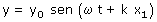
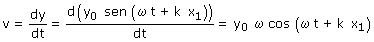
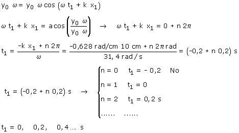
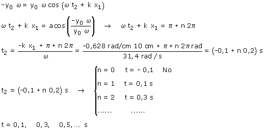

b) Si en una onda elástica se fija un valor para x, la ecuación de onda se convierte en la ecuación de posición del movimiento armónico del punto situado en dicha abscisa.  Esta es la ecuación de oscilación del punto x = 10 cm. Calculamos la velocidad: 
 Calculamos ahora cuando la velocidad es -y0·ω  Resumiendo: la velocidad máxima (Módulo) se alcanza en t = 0, 0.1, 0.2, 0.3,...s Comentario: Si la velocidad de la onda es 50 cm/s la perturbación tardará 0.2 s en llegar al punto, por tanto los valores del tiempo inferiores a 0.2 s no tienen sentido porque entonces no hay oscilación. Así que la velocidad máxima se alcanza a los 0.2, 0.3, 0.4... s de comenzar la propagación de la onda |